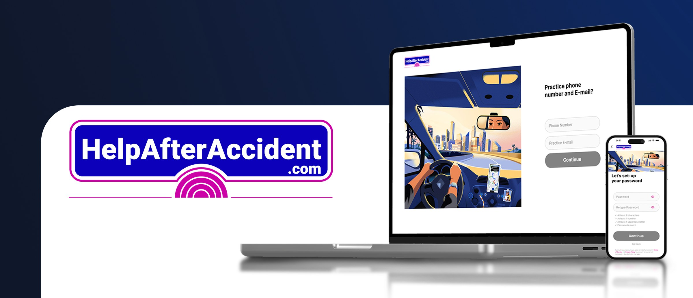
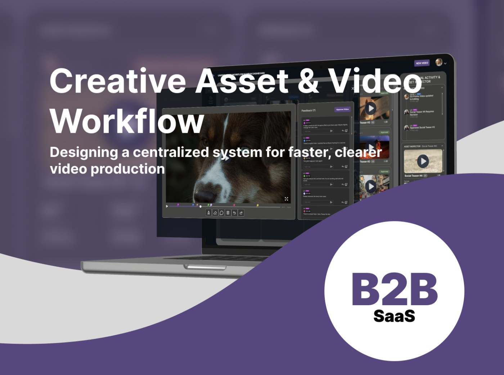
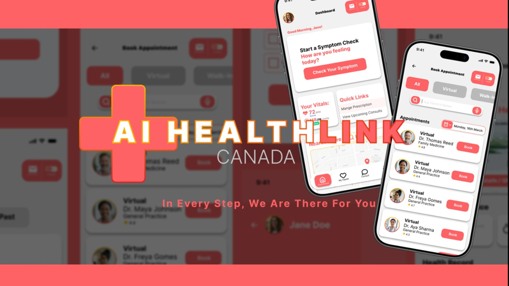

Product designer Open to work
I make complicated things easier to use.
I'm Noibedya. I design the flows people can't skip: onboarding, intake, signup. Most recently I did that for a legal-medical referral platform (GoMAXPAIN).
Selected work
Case studies
One internship case study and two concept projects, all written the way they actually happened: what I tried, what didn't work, and what I'd do differently.

Pre-launch · Legal-medical referral · Mobile + desktop
HelpAfterAccident.com
At GoMAXPAIN (a legal-medical referral startup), I designed signup and intake for five different kinds of users (doctors, lawyers, patients, marketers, and influencers) on one platform. The tricky part was patient intake: I ended up building four versions before one felt right for someone filling it out after a car accident.
Outcome: designs approved for production; product built and in pre-launch
Read the case study →
B2B SaaS · 4-week concept · Desktop web
Creative Asset & Video Workflow
Video production runs on Slack threads and forwarded emails. This concept tool is the alternative: a production board, task cards, and a no-login review link where clients leave timestamped feedback without creating an account. Research came from interviews with editors and my own motion-graphics work.
Target: 30–40% faster approvals, a hypothesis the prototype exists to test
Read the case study →
Healthcare · 4-week concept · iOS + tablet
AI Health Link Canada
Canada's healthcare is hard to navigate even when you're not sick. This concept project is an AI triage and booking tool: symptom check with an emergency gate, a personal health vault, and care booking across virtual and walk-in providers. 17 screens across mobile and tablet, with a WCAG self-audit at the end.
Delivered: 17 screens, a tablet study, and a WCAG self-audit
Read the case study →From an internship performance review
"They don't just place pretty buttons; they analyze the structural dependencies of a workflow. They map out the why before executing the what."
Senior Product Designer, GoMAXPAIN
About
The short version.
I work on the parts of software people can't get around: onboarding, intake, signup. My job is to make them quicker to finish.
I start with research. I want to know what people are trying to do, where they get stuck, and why, before I open Figma. I prototype fast and change my mind a lot.
CS degree, seven years of freelance design work, and post-grad training in 3D animation and VFX. The engineering background means I understand how the code gets written; the motion work means I understand how the eye moves through an interface. Both show up in what I ship.
Outside work: design history, cognitive psychology, and the search for better coffee.
Design practice
Technical foundation
How I work
Contact
Let's talk.
I'm open to full-time roles and freelance projects. Email is the fastest way to reach me, and I actually read it.
Open work permit valid to January 2029. No sponsorship required.